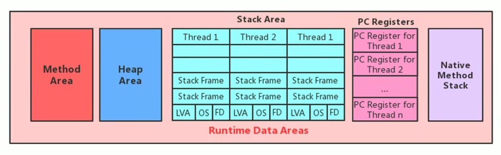
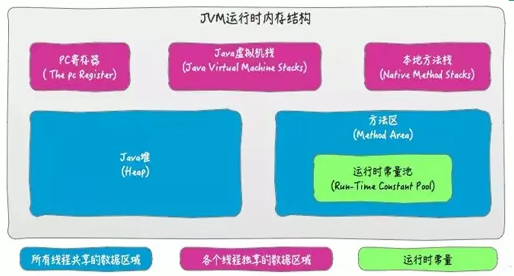
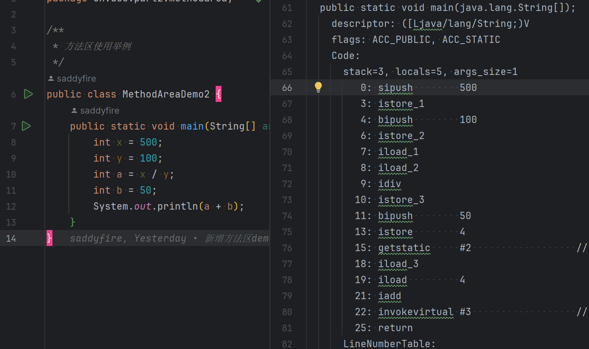
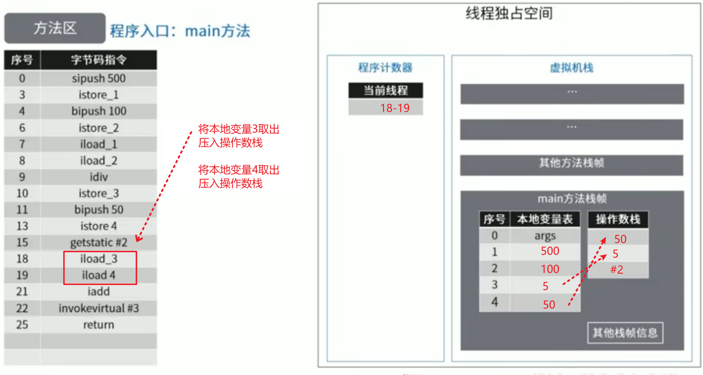

方法区
1-栈、堆、方法区的交互关系

2-方法区的理解
方法区在哪里?
- 《Java虚拟机规范》中明确说明：尽管所有的方法区在逻辑上是属于堆的一部分，但一些简单的实现可能不会选择去进行垃圾收集或者进行压缩。但对于 HotSpotJVM 而言，方法区还有一个别名叫做Non-Heap（非堆），目的就是要和堆分开。
- 所以，方法区可以看作是一块独立于 Java 堆的内存空间。
方法区的基本理解
方法区主要存放的是 Class，而堆中主要存放的是实例化的对象
- 方法区（Method Area）与 Java 堆一样，是各个线程共享的内存区域。多个线程同时加载统一个类时，只能有一个线程能加载该类，其他线程只能等等待该线程加载完毕，然后直接使用该类，即类只能加载一次。
- 方法区在 JVM 启动的时候被创建，并且它的实际的物理内存空间中和 Java 堆区一样都可以是不连续的。
- 方法区的大小，跟堆空间一样，可以选择固定大小或者可扩展。
- 方法区的大小决定了系统可以保存多少个类，如果系统定义了太多的类，导致方法区溢出，虚拟机同样会抛出内存溢出错误：
java.lang.OutofMemoryError:PermGen space或者java.lang.OutOfMemoryError:Metaspace- 加载大量的第三方的jar包
- Tomcat 部署的工程过多（30~50个）
- 大量动态的生成反射类
- 关闭 JVM 就会释放这个区域的内存。
方法区观察示例
public class MethodAreaDemo {
public static void main(String[] args) {
System.out.println("start...");
try {
Thread.sleep(1000000);
} catch (InterruptedException e) {
e.printStackTrace();
}
System.out.println("end...");
}
}HotSpot方法区演进
- 在 JDK7 及以前，习惯上把方法区，称为永久代。JDK8 开始，使用元空间取代了永久代。我们可以将方法区类比为 Java 中的接口，将永久代或元空间类比为 Java 中具体的实现类
- 本质上，方法区和永久代并不等价。仅是对 Hotspot 而言的可以看作等价。《Java虚拟机规范》对如何实现方法区，不做统一要求。例如：BEAJRockit / IBM J9 中不存在永久代的概念。
- 现在来看，当年使用永久代，不是好的 idea。导致 Java 程序更容易 OOM（超过-XX:MaxPermsize上限）
- 而到了 JDK8，终于完全废弃了永久代的概念，改用与 JRockit、J9 一样在本地内存中实现的元空间（Metaspace）来代替
- 元空间的本质和永久代类似，都是对 JVM 规范中方法区的实现。不过元空间与永久代最大的区别在于：元空间不在虚拟机设置的内存中，而是使用本地内存。
- 永久代、元空间二者并不只是名字变了，内部结构也调整了
- 根据《Java 虚拟机规范》的规定，如果方法区无法满足新的内存分配需求时，将抛出 OOM 异常
3-设置方法区大小与OOM
JDK8及以后(元空间)
-
元数据区大小可以使用参数
-XX:MetaspaceSize和-XX:MaxMetaspaceSize指定 -
默认值依赖于平台，Windows 下，
-XX:MetaspaceSize约为21M，-XX:MaxMetaspaceSize的值是-1，即没有限制。 -
与永久代不同，如果不指定大小，默认情况下，虚拟机会耗尽所有的可用系统内存。如果元数据区发生溢出，虚拟机一样会抛出异常 OutOfMemoryError:Metaspace
-
-XX:MetaspaceSize：设置初始的元空间大小。对于一个 64位 的服务器端 JVM 来说，其默认的-XX:MetaspaceSize值为21MB。这就是初始的高水位线，一旦触及这个水位线，Full GC 将会被触发并卸载没用的类（即这些类对应的类加载器不再存活），然后这个高水位线将会重置。新的高水位线的值取决于 GC 后释放了多少元空间。如果释放的空间不足，那么在不超过 MaxMetaspaceSize 时，适当提高该值。如果释放空间过多，则适当降低该值。 -
如果初始化的高水位线设置过低，上述高水位线调整情况会发生很多次。通过垃圾回收器的日志可以观察到 Full GC 多次调用。为了避免频繁地GC，建议将
-XX:MetaspaceSize设置为一个相对较高的值。 -
举例:
-XX:MetaspaceSize=10m -XX:MaxMetaspaceSize=10m
方法区OOM
Demo
/**
* jdk6/7中：
* -XX:PermSize=10m -XX:MaxPermSize=10m
*
* jdk8中：
* -XX:MetaspaceSize=10m -XX:MaxMetaspaceSize=10m
*
* OOMTest 类继承 ClassLoader 类，获得 defineClass() 方法，可自己进行类的加载
*/
public class OOMTest extends ClassLoader {
public static void main(String[] args) {
int j = 0;
try {
OOMTest test = new OOMTest();
for (int i = 0; i < 10000; i++) {
//创建ClassWriter对象，用于生成类的二进制字节码
ClassWriter classWriter = new ClassWriter(0);
//指明版本号，修饰符，类名，包名，父类，接口
classWriter.visit(Opcodes.V1_8, Opcodes.ACC_PUBLIC, "Class" + i, null, "java/lang/Object", null);
//返回byte[]
byte[] code = classWriter.toByteArray();
//类的加载
test.defineClass("Class" + i, code, 0, code.length);//Class对象
j++;
}
} finally {
System.out.println(j);
}
}
}如何解决OOM
- 要解决 OOM 异常或 heap space 的异常，一般的手段是首先通过内存映像分析工具（如 Ecipse Memory Analyzer）对dump出来的堆转储快照进行分析，重点是确认内存中的对象是否是必要的，也就是要先分清楚到底是出现了内存泄漏（Memory Leak）还是内存溢出（Memory Overflow）
- 如果是内存泄漏，可进一步通过工具查看泄漏对象到 GC Roots 的引用链。于是就能找到泄漏对象是通过怎样的路径与 GC Roots 相关联并导致垃圾收集器无法自动回收它们的。掌握了泄漏对象的类型信息，以及 GC Roots 引用链的信息，就可以比较准确地定位出泄漏代码的位置。
- 如果不存在内存泄漏，换句话说就是内存中的对象确实都还必须存活着，那就应当检查虚拟机的堆参数（-Xmx与-Xms），与机器物理内存对比看是否还可以调大，从代码上检查是否存在某些对象生命周期过长、持有状态时间过长的情况，尝试减少程序运行期的内存消耗。
4-方法区的内部结构
《深入理解 Java 虚拟机》书中对方法区（Method Area）存储内容描述如下：它用于存储已被虚拟机加载的类型信息、常量、静态变量、即时编译器编译后的代码缓存等。
类型信息
对每个加载的类型（类 class、接口 interface、枚举 enum、注解annotation），JVM 必须在方法区中存储以下类型信息：
- 这个类型的完整有效名称（全名=包名.类名）
- 这个类型直接父类的完整有效名（对于 interface 或是java.lang.Object，都没有父类）
- 这个类型的修饰符（public，abstract，final 的某个子集）
- 这个类型直接接口的一个有序列表
域(Field)信息
也就是我们常说的成员变量，域信息是比较官方的称呼
- JVM 必须在方法区中保存类型的所有域的相关信息以及域的声明顺序。
- 域的相关信息包括：域名称，域类型，域修饰符（public，private，protected，static，final，volatile，transient 的某个子集）
方法(Method)信息
JVM 必须保存所有方法的以下信息，同域信息一样包括声明顺序：
- 方法名称
- 方法的返回类型（包括 void 返回类型），void 在 Java 中对应的为 void.class
- 方法参数的数量和类型（按顺序）
- 方法的修饰符（public，private，protected，static，final，synchronized，native，abstract的一个子集）
- 方法的字节码（bytecodes）、操作数栈、局部变量表及大小（abstract 和 native方法除外）
- 异常表（abstract 和 native方法除外），异常表记录每个异常处理的开始位置、结束位置、代码处理在程序计数器中的偏移地址、被捕获的异常类的常量池索引
demo
/**
* <p>Description: 测试方法区内部构成
*/
public class MethodInnerStrucTest extends Object implements Comparable<String>, Serializable {
//属性
public int num = 10;
private static String str = "测试方法的内部结构";
//构造器
//方法
public void test1(){
int count = 20;
System.out.println("count = " + count);
}
public static int test2(int cal){
int result = 0;
try {
int value = 30;
result = value / cal;
} catch (Exception e) {
e.printStackTrace();
}
return result;
}
@Override
public int compareTo(String o) {
return 0;
}
}javap -v -p MethodInnerStrucTest > test.txt
-p是为了查看private权限类型的字段或方法
non-final 类型的类变量
静态方法对象为 null 依旧可以访问
运行时常量池

- 方法区，内部包含了运行时常量池
- 类文件通过类加载器加载到方法区后, 字节码中的常量池便称为运行时常量池
- 字节码文件，内部包含了常量池。（之前的字节码文件中已经看到了很多 Constant pool 的东西，这个就是常量池）
- 要弄清楚方法区，需要理解清楚 ClassFile，因为加载类的信息都在方法区。
- 要弄清楚方法区的运行时常量池，需要理解清楚 ClassFile 中的常量池。
常量池
- 一个有效的字节码文件中除了包含类的版本信息、字段、方法以及接口等描述符信息外。还包含一项信息就是常量池表（Constant Pool Table），包括各种字面量和对类型、域和方法的符号引用
为什么需要常量池?
一个java源文件中的类、接口，编译后产生一个字节码文件。而Java中的字节码需要数据支持，通常这种数据会很大以至于不能直接存到字节码里，换另一种方式，可以存到常量池。这个字节码包含了指向常量池的引用。在动态链接的时候会用到运行时常量池，之前有介绍
public class SimpleClass {
public void sayHello() {
System.out.println("hello");
}
}- 虽然上述代码只有194字节，但是里面却使用了String、System、PrintStream 及 Object 等结构。
- 比如说我们这个文件中有 6 个地方用到了 “hello” 这个字符串，如果不用常量池，就需要在 6 个地方全写一遍，造成臃肿。我们可以将 “hello” 等所需用到的结构信息记录在常量池中，并通过引用的方式，来加载、调用所需的结构
- 这里的代码量其实很少了，如果代码多的话，引用的结构将会更多，这里就需要用到常量池了。
常量池中有什么?
几种在常量池内存储的数据类型包括:
- 数量值
- 字符串值
- 类引用
- 字段引用
- 方法引用
小结
常量池、可以看做是一张表，虚拟机指令根据这张常量表找到要执行的类名、方法名、参数类型、字面量等类型。
运行时常量池
-
运行时常量池（Runtime Constant Pool）是方法区的一部分。
-
常量池表（Constant Pool Table）是Class字节码文件的一部分，用于存放编译期生成的各种字面量与符号引用，这部分内容将在类加载后存放到方法区的运行时常量池中。（运行时常量池就是常量池在程序运行时的称呼）
-
运行时常量池，在加载类和接口到虚拟机后，就会创建对应的运行时常量池。
-
JVM 为每个已加载的类型（类或接口）都维护一个常量池。池中的数据项像数组项一样，是通过索引访问的。
-
运行时常量池中包含多种不同的常量，包括编译期就已经明确的数值字面量，也包括到运行期解析后才能够获得的方法或者字段引用。此时不再是常量池中的符号地址了，这里换为真实地址。
- 运行时常量池，相对于 Class 文件常量池的另一重要特征是：具备动态性。
- 比如
String.intern()
-
运行时常量池类似于传统编程语言中的符号表（symbol table），但是它所包含的数据却比符号表要更加丰富一些。
-
当创建类或接口的运行时常量池时，如果构造运行时常量池所需的内存空间超过了方法区所能提供的最大值，则 JVM 会抛 OutofMemoryError 异常。
5-方法区使用举例
public class MethodAreaDemo2 {
public static void main(String[] args) {
int x = 500;
int y = 100;
int a = x / y;
int b = 50;
System.out.println(a + b);
}
}
步骤细节


6-方法区演进细节
永久代演进过程
-
首先明确：只有 Hotspot 才有永久代。BEA JRockit、IBMJ9等来说，是不存在永久代的概念的。原则上如何实现方法区属于虚拟机实现细节，不受《Java虚拟机规范》管束，并不要求统一
-
Hotspot 中方法区的变化：
| JDK1.6及以前 | 有永久代（permanent generation），静态变量存储在永久代上 |
|---|---|
| JDK1.7 | 有永久代，但已经逐步 “去永久代”，字符串常量池，静态变量移除，保存在堆中 |
| JDK1.8 | 无永久代，类型信息，字段，方法，常量保存在本地内存的元空间，但字符串常量池、静态变量仍然在堆中。 |
永久代为什么要被元空间替代？
- 随着 Java8 的到来，HotSpot VM 中再也见不到永久代了。但是这并不意味着类的元数据信息也消失了。这些数据被移到了一个与堆不相连的本地内存区域，这个区域叫做元空间（Metaspace）。
- 由于类的元数据分配在本地内存中，元空间的最大可分配空间就是系统可用内存空间。
- 这项改动是很有必要的，原因有：
- 为永久代设置空间大小是很难确定的。在某些场景下，如果动态加载类过多，容易产生Perm区的OOM。比如某个实际Web工程中，因为功能点比较多，在运行过程中，要不断动态加载很多类，经常出现致命错误。
Exception in thread 'dubbo client x.x connector' java.lang.OutOfMemoryError:PermGen space而元空间和永久代之间最大的区别在于：元空间并不在虚拟机中，而是使用本地内存。 因此，默认情况下，元空间的大小仅受本地内存限制。 - 对永久代进行调优是很困难的。方法区的垃圾收集主要回收两部分内容：常量池中废弃的常量和不再用的类型，方法区的调优主要是为了降低 Full GC
- 为永久代设置空间大小是很难确定的。在某些场景下，如果动态加载类过多，容易产生Perm区的OOM。比如某个实际Web工程中，因为功能点比较多，在运行过程中，要不断动态加载很多类，经常出现致命错误。
两个问题
字符串常量池 StringTable 为什么要调整位置？
-
JDK7 中将 StringTable 放到了堆空间中。因为永久代的回收效率很低，在 Full GC 的时候才会执行永久代的垃圾回收，而 Full GC 是老年代的空间不足、永久代不足时才会触发。
-
这就导致 StringTable 回收效率不高，而我们开发中会有大量的字符串被创建，回收效率低，导致永久代内存不足。放到堆里，能及时回收内存。
静态变量放在哪
demo1
/**
* jdk7：
* -Xms200m -Xmx200m -XX:PermSize=300m -XX:MaxPermSize=300m -XX:+PrintGCDetails
* jdk 8：
* -Xms200m -Xmx200m -XX:MetaspaceSize=300m -XX:MaxMetaspaceSize=300m -XX:+PrintGCDetails
*/
public class StaticFieldTest {
private static byte[] arr = new byte[1024 * 1024 * 100];//100MB
public static void main(String[] args) {
System.out.println(StaticFieldTest.arr);
}
}结论
- 静态引用对应的对象实体 (也就是这个 new byte[1024 * 1024 * 100]) 始终都存在堆空间
- 只是那个变量(相当于下面的 arr 变量名)在 JDK6, JDK7, JDK8 存放位置中有所变化
demo2
/**
* 《深入理解Java虚拟机》中的案例：
* staticObj、instanceObj、localObj存放在哪里？
*/
public class StaticObjTest {
static class Test {
static ObjectHolder staticObj = new ObjectHolder();
ObjectHolder instanceObj = new ObjectHolder();
void foo() {
ObjectHolder localObj = new ObjectHolder();
System.out.println("done");
}
}
private static class ObjectHolder {
}
public static void main(String[] args) {
Test test = new StaticObjTest.Test();
test.foo();
}
}结论
-
staticObj静态成员变量随着Test的类信息存放在方法区, -
instanceObj成员变量随着Teset的对象示例存放在Java堆, -
localObject方法变量则是存放在foo()方法栈的局部变量表中. -
三个对象的数据在内存中的地址都落在Eden区范围内，所以结论：只要是对象实例必然会在 Java 堆中分配。
从《Java 虚拟机规范》所定义的概念模型来看，所有 Class 相关的信息都应该存放在方法区之中，但方法区该如何实现，《Java 虚拟机规范》并未做出规定，这就成了一件允许不同虚拟机自己灵活把握的事情。JDK7 及其以后版本的 HotSpot 虚拟机选择把静态变量与类型在 Java 语言一端的映射 Class 对象存放在一起，存储于 Java 堆之中
7-方法区的垃圾回收
-
有些人认为方法区（如 Hotspot 虚拟机中的元空间或者永久代）是没有垃圾收集行为的，其实不然。《Java 虚拟机规范》对方法区的约束是非常宽松的，提到过可以不要求虚拟机在方法区中实现垃圾收集。事实上也确实有未实现或未能完整实现方法区类型卸载的收集器存在（如 JDK11 时期的 ZGC 收集器就不支持类卸载）。
-
一般来说这个区域的回收效果比较难令人满意，尤其是类型的卸载，条件相当苛刻。但是这部分区域的回收有时又确实是必要的。以前 sun 公司的 Bug 列表中，曾出现过的若干个严重的 Bug 就是由于低版本的 HotSpot 虚拟机对此区域未完全回收而导致内存泄漏。
-
方法区的垃圾收集主要回收两部分内容：常量池中废弃的常量和不再使用的类型。
方法区的垃圾收集
-
先来说说方法区内常量池之中主要存放的两大类常量：字面量和符号引用。字面量比较接近Java语言层次的常量概念，如文本字符串、被声明为final的常量值等。而符号引用则属于编译原理方面的概念，包括下面三类常量：
- 类和接口的全限定名
- 字段的名称和描述符
- 方法的名称和描述符
-
HotSpot 虚拟机对常量池的回收策略是很明确的，只要常量池中的常量没有被任何地方引用，就可以被回收。
-
回收废弃常量与回收 Java 堆中的对象非常类似。（关于常量的回收比较简单，重点是类的回收）
下面也称作类卸载
-
判定一个常量是否“废弃”还是相对简单，而要判定一个类型是否属于“不再被使用的类”的条件就比较苛刻了。需要同时满足下面三个条件：
-
该类所有的实例都已经被回收，也就是 Java 堆中不存在该类及其任何派生子类的实例。
-
加载该类的类加载器已经被回收，这个条件除非是经过精心设计的可替换类加载器的场景，如 OSGi、JSP 的重加载等，否则通常是很难达成的。
-
该类对应的 java.lang.Class 对象没有在任何地方被引用，无法在任何地方通过反射访问该类的方法。
-
-
Java 虚拟机被允许对满足上述三个条件的无用类进行回收，这里说的仅仅是“被允许”，而并不是和对象一样，没有引用了就必然会回收。关于是否要对类型进行回收，HotSpot 虚拟机提供了
-Xnoclassgc参数进行控制，还可以使用-verbose:class以及-XX：+TraceClass-Loading、-XX：+TraceClassUnLoading查看类加载和卸载信息 -
在大量使用反射、动态代理、CGLib 等字节码框架，动态生成 JSP 以及 OSGi 这类频繁自定义类加载器的场景中，通常都需要 Java 虚拟机具备类型卸载的能力，以保证不会对方法区造成过大的内存压力。
8-总结
常见面试题
- 说一下 JVM 内存模型吧，有哪些区？分别干什么的？
- Java8 的内存分代改进
- JVM 内存分哪几个区，每个区的作用是什么？
- JVM 内存分布/内存结构？栈和堆的区别？堆的结构？为什么两个 survivor 区？
- Eden 和 survior 的比例分配
- JVM 内存分区，为什么要有新生代和老年代
- Java 的内存分区
- 讲讲 JVM 运行时数据库区
- 什么时候对象会进入老年代？
- JVM 的内存结构，Eden 和 Survivor 比例。
- JVM 内存为什么要分成新生代，老年代，持久代。新生代中为什么要分为 Eden 和 Survivor。
- 一面：JVM 内存模型以及分区，需要详细到每个区放什么。
- 一面：JVM 的内存模型，Java8 做了什么改
- JVM 内存分哪几个区，每个区的作用是什么？
- Java 内存分配
- JVM 的永久代中会发生垃圾回收吗？
- 一面：JVM 内存分区，为什么要有新生代和老年代？